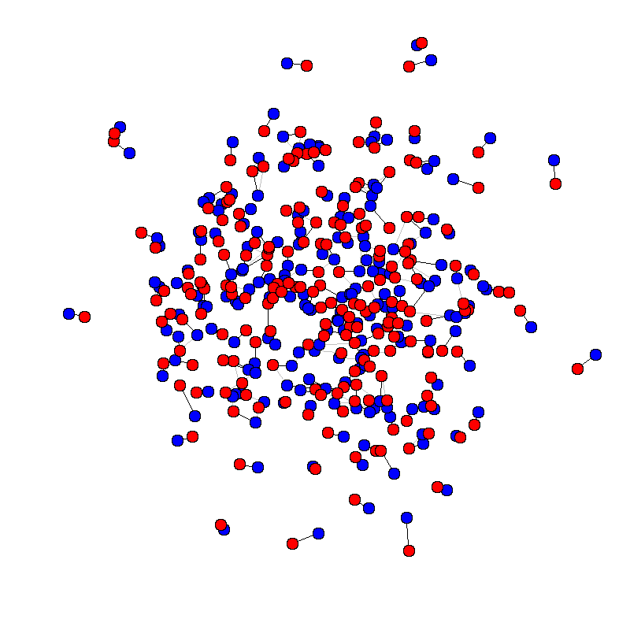
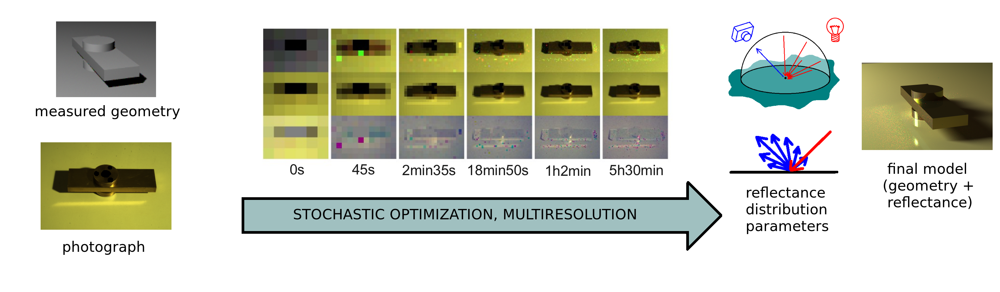
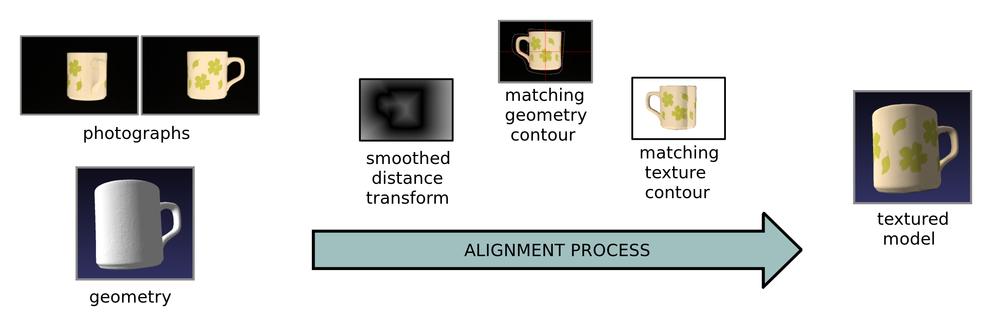
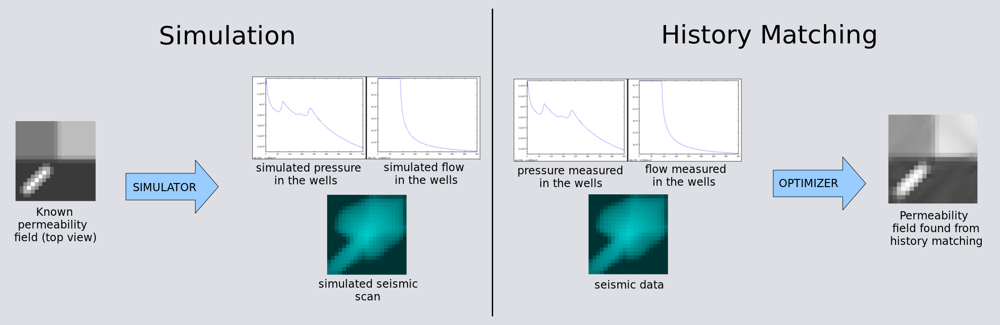

Gustavo T. Pfeiffer
Currently I am a Ph.D. candidate in Information and Communication Engineering at
the University of Tokyo, supervised by
Prof. Yoichi Sato.
Previously, I did
research for many years at the Computer Graphics Laboratory (LCG),
of COPPE-UFRJ, as a M.Sc.
student from PESC-UFRJ and as an undergraduate research student
during my graduation in Computer and Information Engineering at UFRJ. Before entering LCG, I had also
worked with Petroleum Reservoir Engineering at LABMA-UFRJ.
My research encompasses various themes within Computer Graphics and Vision, including 3D reconstruction, physically-based appearance modeling and vision-based interaction.
Contact
- E-mail: gtpfeiffer "at" ut-vision.org
Research
Probabilistic Matching Problems


- PFEIFFER, Gustavo, MARROQUIM, Ricardo, OLIVEIRA, Antonio A. F., WebcamPaperPen: A Low Cost Graphics Tablet (presentation, video, suppl. material). In: XXVII Sibgrapi - Conference on Graphics, Patterns and Images, 2014, Rio de Janeiro. Sibgrapi 2014 (27 Conference on Graphics, Patterns and Images), 2014.
- See also: Graduation Project, 2014: dissertation, presentation
- See also: Project webpage with downloads and source code.
BRDF Fitting

Photograph-Geometry Alignment

- MARROQUIM, Ricardo; PFEIFFER, Gustavo; CARVALHO, Felipe; Oliveira, Antonio A. F.. Texturing 3D models from sequential photos. The Visual Computer, 2012.
- MARROQUIM, Ricardo; PFEIFFER, G. T.; CARVALHO, Felipe; OLIVEIRA, Antonio. Texturing 3D models with low geometric features. In: XXIV Sibgrapi - Conference on Graphics, Patterns and Images, 2011, Maceió. Sibgrapi 2011 (24 Conference on Graphics, Patterns and Images), 2011. p. 1-8.
History Matching (Petroleum Reservoir Engineering)

- DICKSTEIN, F.; GOLDFELD, P.; PFEIFFER, G.; PINTO, R.. Truncated Conjugate Gradient Method for History Matching in Reservoir Simulation. In: CNMAC 2016.
- DICKSTEIN, F.; GOLDFELD, P.; PFEIFFER, G. T.; AMORIM, E.; SANTOS, R. W. dos; GOMEZ, S. G.. A Study of the Impact of 4D-Seismic Data on TSVD-Based Schemes for History Matching. In: SPE Latin American & Caribbean Petroleum Engineering Conference, 2010, Lima. SPE Latin American & Caribbean Petroleum Engineering Conference. San Antonio: Society of Petroleum Engeneering, 2010. p. 1-11.